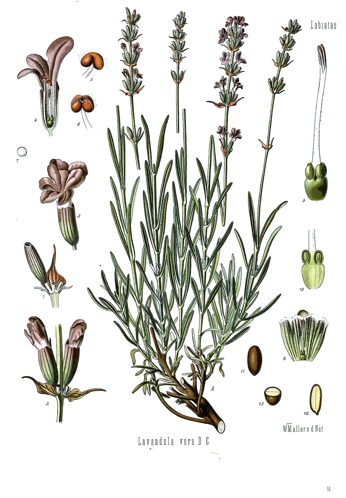

After linaloe, a fragrant Mexican wood. An open chain with an –OH group on the third carbon.
- Scent
- soft, floral, lavender-like, gently woody Reference description: “odor similar to that of bergamot oil and French lavender” (HSDB)
- Found in
- lavender, coriander, basil, thyme, bergamot, rosewood, jasmine, neroli, mint.
- In our honeys
- Grounding Rest as a flavouring ingredient; amount not published
- In food
- Evaluated as a flavouring in 1998 by JECFA, the FAO/WHO expert committee on food additives: no safety concern at current levels of intake when used as a flavouring agent; it also comes under a group acceptable daily intake of 0–0.5 mg per kg of body weight. Its entry in the JECFA database
- Molar mass
- 154.25 g/mol
- Boiling point
- 198 °C HSDB
- CAS number
- 78-70-6
- FEMA number
- 2635
- Record
- PubChem 6549
- Systematic name
- 3,7-dimethylocta-1,6-dien-3-ol
What has been studied So far: animals
- AnimalsIn a 2018 study, mice that smelled linalool behaved less anxiously. Mice that had lost their sense of smell did not respond, so the effect travelled through the nose.13
- Five randomized trials of Silexan, an 80 mg daily capsule of a standardized lavender oil, found less anxiety than with placebo. Silexan contains linalool and many other compounds; the trials tested the capsule, not linalool.14
- ReviewA 2021 review summarizes cell and animal findings on sedation, pain and inflammation.12
- Not knownThe effect of isolated linalool in people, by mouth or by nose.